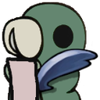

HKSC casual and tournament races, unless otherwise determined before the race, are played with the speedrunning NMG Ruleset with some modifications. A full list of banned/allowed glitches for the NMG ruleset can be found here. Note that most of the guidelines for submissions and timing runs do not apply due to the nature of randomizer races. Usually, the winner of a randomizer race is based on RTA rather than in-game or load-removed time, due to the in-game timer being very inaccurate, and the difficulty in factoring a "knowledge advantage" into a non-RTA race.
Some of the common banned glitches are summarized below:
Any Invulnerability glitch
Any Out of Bounds glitch
Any glitch that results in an invisible character or will result in a invisible character with no additional player input
Any form of item duplication
Inventory Storage
Float glitch
Superslides
Quick Map stalls/storage
In addition to these NMG banned glitches, the randomizer community has voted to ban Shriek Pogos (AKA "Shrogo" or "Shwings"). This differs from the NMG ruleset used in speedrunning.
While Slopeball/Stallball has yet to be voted on, it is basically de facto banned and performing slopeball in a race is discouraged. If you want to use slopeball in a race, you should ask the other racers first, or preferably decide whether to allow or disallow it beffore the race.
Accidental use of glitches may be ignored if the player realizes and attempts to fix the problem quickly. For tournament races, this is usually left up to the TOs and may result in a disqualification or automatic loss.
There are no forced checks in the game, but players should make sure they are using the same seed and randomizer version by confirming their hash with the other player(s)/team(s).
A player can only cross off an objective after that objective is actually completed. In a lockout setting, players are not forced to cross off or claim completed objectives. The first player/team to claim an objective is the one to earn the point for it, even if the opposing player/team technically completed it first, and the opponent/opposing team can no longer claim that objective.
For other formats such as blackout and 3-lines, even though there’s no incentive to marking goals until the end of the game, mark obtained goals ASAP. Failing to do so is considered goal hiding and is disallowed.
Benchwarping is permitted to any bench that the player has already sat on. However, both deploy bench and unlock all are disallowed.
The default ruling does not allow for Flower Quest to be benchwarped, and instead players should do the quest as they would normally. However, runner agreements to benchwarp said quest may be reached before a race starts.
In races requiring Radiance, a team has finished the race when both players have dealt the final hit to the Radiance in the cutscene with the void tendrils (so NOT the one right at the end of the climb). You can type gg in the race chat when you finished your Radiance this way, ggs from both players signify the team’s finish.
The final hit to the Radiance can only be dealt when all other goals for the format have been completed by a team (25 goals for blackout, all major items for all majors, etc.). One teammate is allowed to start the fight before the goals are completed as long as they delay the final hit until the other player has finished the remaining goals.
RandoMapMod, Helper log and Tracker log are allowed for all races. Spoiler log is only allowed in spoiler formats.
Goals for bingo formats should be marked by the person who completed them. Only one person needs to complete a goal, but both need to kill Radiance to finish. Goals that have multiple components in them can be shared in certain cases:
If grubs are shared between the two players (by having grubs randomized in their own pool, most likely will be the case), Check/Free all grubs in […] goals can be shared.
This is specifically written for the generator on bingosync. Other bingo sites may use older naming / phrasing of some goals.
Defeat [boss] goals can be marked when the boss reaches 0 HP.
Defeat two Dream Bosses: Failed Champion, Lost Kin, Soul Tyrant, White Defender, Grey Prince Zote, Nightmare King Grimm.
Defeat two Dream Warriors: Gorb, Marmu, Elder Hu, No Eyes, Markoth, Galien, Xero.
Godhome is a valid option for any boss goal. Hall of Gods is considered a different fight, rather than a refight, meaning that these fights count towards goals that may require killing more than one of an enemy’s kind (e.g “Kill two soul warriors”). This includes banishing NKG and killing it in Godhome.
Goam and Garpede, Charged Lumafly, Void Tendrils journal entries:
Goals that begin with Get the […]: the item there needs to be picked up / obtained, previewing it is not enough.
Goals that begin with Check […]: no need to necessarily buy / obtain if the option is there.
Break 3 floors using Dive: this goal counts dive floors, not dive usages themselves. For example, diving towards the Waterways main bench completes this goal by itself.
Have 1500 geo in the bank: you can’t get the money back once you marked the goal, if you do, the goal gets unmarked.
Complete either ending of the Cloth questline:
Kill 3 Oomas with a minion charm: Glowing Womb, Grimmchild, Weaversong, nothing else.
Open the Dirtmouth/Crystal Peak elevator: if levers are randomized, checking / hitting the location of the lever is what counts.
Visit [area] and Enter Godhome: Can be marked when the area’s text appears on screen. This means that some areas, such as Crystalised Mound, require not just entering the room where the text would show up but also progressing in it.
Check/Read two lore tablets in City of Tears proper (No sub areas): the lore tablet above the Quirrel bench and the one in Watcher’s Spire below Lurien.
Nail 2 / Nail 3:
Take a bath in 4 different hot springs: the cloudy lake at the bottom of Godhome does not count, but the ones in Pantheons do, if you hate yourself.
If mimics are randomized, the mimic needs to be killed in order for its location to count for a Check/Free all grubs in […] goal.
The Kill 4 mimics goal requires visiting the mimics’ vanilla locations and breaking the jar / killing the mimic there, even if mimics are randomized.
There is a zero-tolerance policy for intentionally cheating, and users will be punished accordingly, be it in a tournament match or a casual race. Due to the severity of cheating and the punishment it carries, don't make joke accusations and intentional malicious false accusations will be met with just as severe consequences.
Cheating includes, but is not limited to (Unless otherwise agreed):
Use of Spoiler log outside of spoiler log formats.
Marking goals you don't currently have.
Calling finished early.
Stream sniping.
Using banned mods such as Debug.
Randomiser racing is inherently volatile, and upsets are common. Assume good faith, and if someone accidentally marks a goal early or takes a route you deem unusual it isn't proof that the person is cheating.
